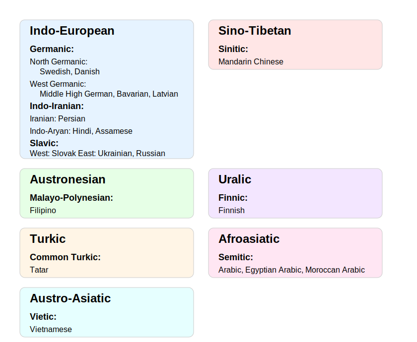
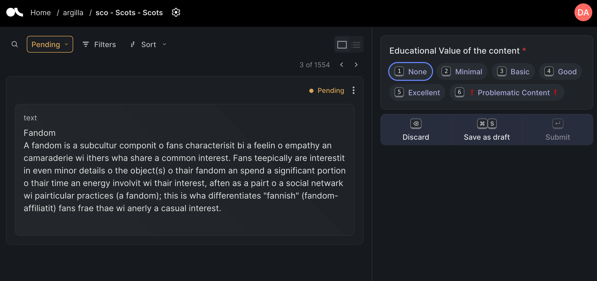
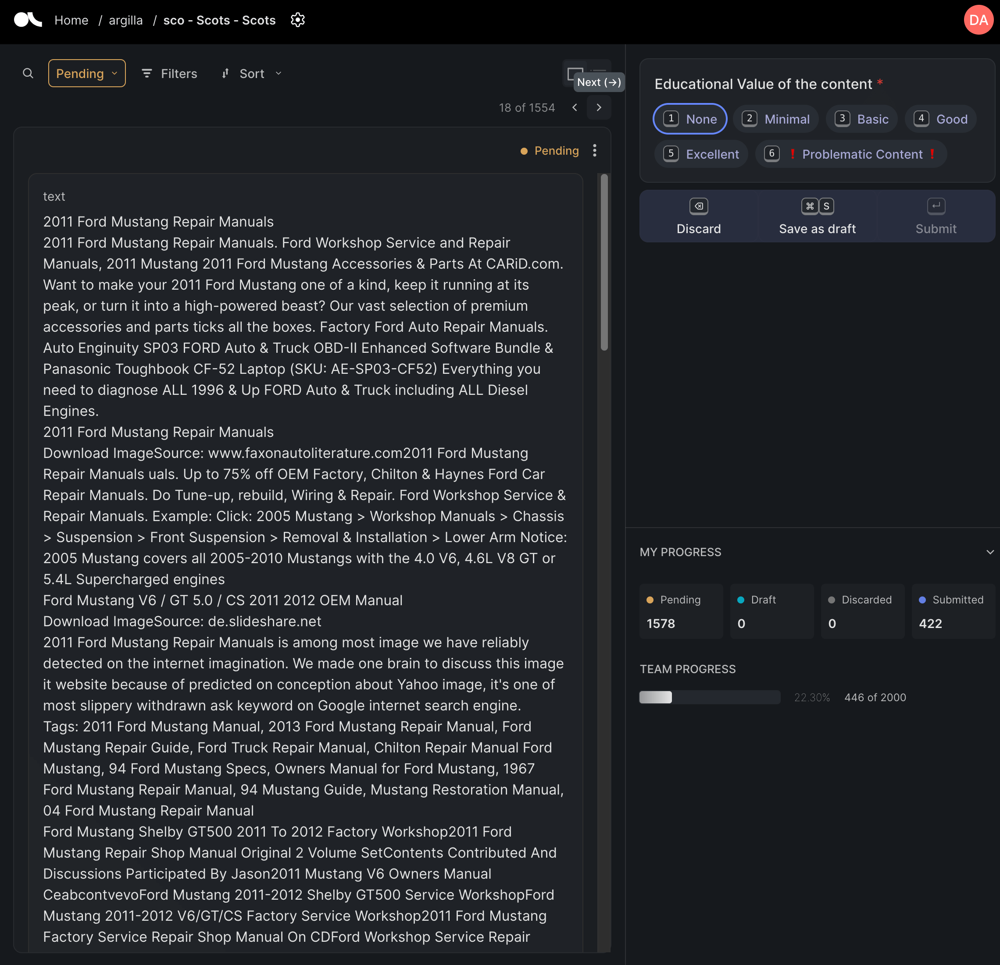

%pip install polars datasets accelerate evaluate transformers torch huggingface_hub scikit-learn tensorboard wandb matplotlib --upgradeHygge Web Data - Cozy Content Filtering for a finer Scandinavian FineWeb
polars
huggingface
fineweb
datasets
Building and evaluating efficient, disposable content filtering models for Scandinavian language texts using the FineWeb-c dataset to improve data quality
How and why to curate Web Scale Data
The performance of a large language model (LLM) depends heavily on the quality and size of its pretraining dataset. - FineWeb blog post
Whilst quality is important, the quantity of data we start with is significant. For example the original FineWeb-2 dataset contains 15 trillion tokens (44TB on disk).
The challenge is then: how can we curate data for LLMs in a scalable way? One possible approach is to use LLMs to help with labelling text. Whilst LLMs can do well on this kind of task (especially when using Structured Generation), scaling LLM labeling to web scale is a challenge.
Last year, FineWeb-Edu showed that filtering data for educational quality could yield improvements for LLMs trained on this filtered data. The approach they took was to first use an LLM to label a subset of data and then use a fine-tuned a much smaller BERT-based model to filter the data.
The publication of ModernBert has shown that there is still a lot of excitement around the use of smaller encoder-based models for labelling tasks, indeed one of the examples they cite in their blog post is the cost of creating FineWeb-Edu if they had used a decoder-only model.
An interesting example is FineWeb-Edu, where model-based quality filtering had to be performed over 15 trillion tokens. The FineWeb-Edu team chose to generate annotations with a decoder-only model, Llama-3-70b-Instruct, and perform the bulk of the filtering with a fine-tuned BERT-based model. This filtering took 6,000 H100 hours, which, at HuggingFace Inference Endpoints’ pricing of $10/hour, comes to a total of $60,000. On the other hand, feeding 15 trillion tokens to popular decoder-only models, even with the lowest-cost option of using Google’s Gemini Flash and its low inference cost of $0.075/million tokens, would cost over one million dollars! ModernBert blog post
The ideal approach then seems to be something like:
- Use an LLM to label a subset of data and use these labels to train a smaller model
- Use a smaller model to make prediction on a large dataset and use these predictions to filter the data
- Profit!
While this may work well for English data, many papers have shown that the performance of LLMs for these kinds of tasks can be much worse than for English.
This is where the FineWeb-c dataset comes in.
The FineWeb-C dataset
FineWeb-C is a community-driven initiative to help create high-quality datasets for training LLMs in multiple languages. Rather than relying solely on LLM-based labeling (which may perform poorly in non-English languages), the FineWeb-C project leverages the Hugging Face community to annotate texts for educational quality across different languages. The project has seen significant growth, achieving:
- Over 48,000 total annotations
- Coverage of 114 different languages
- Contributions from 400+ annotators
You can contribute using your Hugging Face account here: https://huggingface.co/spaces/data-is-better-together/fineweb-c
The project has already released several versions of the dataset, currently covering 18 languages that have reached the 1,000 annotations threshold (this number keeps growing thanks to the community’s rapid contributions!). This community-driven approach helps ensure that data quality assessment isn’t limited by the capabilities of existing LLMs, particularly for lower-resource languages.
In a previous blog post, I discussed using Polars to filter out problematic content from the FineWeb-C dataset using rules and heuristics. While this approach can be effective with well-defined rules, I also examined the current annotated dataset in this post, which showed that some languages may already have sufficient annotated data to train a content filtering model.
In this post, we’ll explore using the FineWeb-C dataset to train a model that can help curate the FineWeb-2 dataset.
Training a classifier to help curate the FineWeb-2 dataset
The long term goal of FineWeb-C is to create a dataset that can help reproduce FineWeb-Edu for many languages. This basically means we need some data for training a model(s) to label the educational quality of text data. Let’s look at the data the community has created so far to see what we can already do with the data.
First we install the necessary libraries.
Code
import numpy as np
import polars as pl
from datasets import Dataset, DatasetDict
from huggingface_hub import list_repo_files
from scipy.special import softmax
from sklearn.metrics import (
average_precision_score,
confusion_matrix,
f1_score,
precision_recall_curve,
precision_score,
recall_score,
roc_auc_score,
)
from sklearn.model_selection import train_test_split
from transformers import (
AutoModelForSequenceClassification,
AutoTokenizer,
EarlyStoppingCallback,
Trainer,
TrainingArguments,
)Understand the data
We’ll load the dataset from the Hugging Face Hub using Polars which supports loading data from the Hub.
In this case, we’ll load the “default” config which contains all the languages that have reached the 1,000 annotations threshold.
df = pl.read_parquet("hf://datasets/data-is-better-together/fineweb-c/data/*.parquet")
df = df.lazy()df.select("language_code").unique().collect().to_series().to_list()['lvs_Latn',
'swe_Latn',
'cmn_Hani',
'fra_Latn',
'tat_Cyrl',
'ukr_Cyrl',
'arz_Arab',
'hin_Deva',
'yue_Hani',
'zsm_Latn',
'fas_Arab',
'vie_Latn',
'slk_Latn',
'gmh_Latn',
'dan_Latn',
'spa_Latn',
'rus_Cyrl',
'ary_Arab',
'bar_Latn',
'fin_Latn',
'fil_Latn',
'asm_Latn',
'arb_Arab']Can we train a model to work with a subset of languages?
So far we have 18 languages in the dataset. Currently over a 100 languages have some level of annotation so eventually we hope the community will create a dataset for ma ne model per language.
Claude gave me the following visual for languages groups in this dataset (which isn’t super accurate but gives a rough idea of the language families represented in the dataset).

We can see a few possible language groups that it could make sense to train a model on. One potential group is the Germanic languages. Let’s look at the data for these languages.
Note
I focused on Germanic languages to start with as if I squint I can get a rough understanding of the language. I would be very excited to see the community begin to explore all of the languages in the dataset.
germanic_languages = ["gmh_Latn", "dan_Latn", "swe_Latn", "bar_Latn", "lvs_Latn"]What do we want to label?
While the overarching goal of the FineWeb-C project is to create a dataset for training models to label the educational quality of text, in order to effectively train this kind of model we need a reasonable distribution of labels.
Problematic content?
The annotation interface for FineWeb-c looks something like this (using Scots as an example).

For this example, the annotator could mostly focus on how educational the text is. However, this is the web we’re annotating so we will sometimes come across “problematic” content. This content is usually content in the wrong language i.e. the language predicted during the FineWeb-2 extraction process is incorrect (this happens quite a lot for some languages and much less for others) or the content is garbled in some way. An example of this kind of content is shown below.

We can see that the content is in the wrong language (English) the text is also somewhat garbled
Note
Why aren’t these just labeled as None i.e. no educational value? Annotating data always comes with some ambiguity. In this case, we added a problematic label to try and make it easier for the community to flag content that was incorrect in some other way. We could have added a whole separate label for this and for the different possible types of issue but this adds extra cognitive load for the annotator. We can also deal with possible overlap in usage of these labels in other ways.
Before we dive into training an educational quality classifier, let’s look at the data for the Germanic languages and see how often this problematic content is present. We’re using Polars in Lazy mode but it’s not really necessary for the size of the dataset at the moment. In the future the dataset might become large enough that this can be more important.
df_germanic = df.filter(pl.col("language_code").is_in(germanic_languages))Let’s start by seeing the percentage of problematic content for each language in the “germanic” group.
(
df_germanic.group_by("language_code")
.agg(
[
(
pl.col("problematic_content_label_present").sum()
/ pl.col("problematic_content_label_present").count()
* 100
).alias("problematic_percentage")
]
)
.sort("problematic_percentage", descending=True)
).collect()
shape: (5, 2)
| language_code | problematic_percentage |
|---|---|
| str | f64 |
| "gmh_Latn" | 98.3 |
| "bar_Latn" | 77.0 |
| "dan_Latn" | 19.4 |
| "swe_Latn" | 8.8 |
| "lvs_Latn" | 8.7 |
We can see that for some of the languages in this group the percentage of problematic content is very high. In particular Bavarian and Middle High German have a very high percentage of problematic content. The other languages have a much lower percentage of problematic content.
Making the lives of annotators easier and getting more educational?
While we could jump to training a model to label the educational quality of the text, we may wan to start in a more modest way. In my previous blog post I generated this plot showing the distribution of educational value for languages in the dataset.

While some languages have a fairly good distribution of educational value labels, most have very few examples of “Excellent” educational quality content. This is not surprising – the majority of the web is not educational…
For languages with very few examples of any educational content training a classifier to label the educational quality of the text is not going to work well. For these languages we probably want to first focus on being able to remove problematic content so we reduce the amount of “noise” annotators need to spend time on and then can instead focus on labelling content that is more likely to be educational.
For this we’ll train a model to label problematic content. We’ll start with the Scandinavian languages since we have Danish and Swedish datasets completed and these languages are somewhat similar (don’t come at me Danish and Swedish speaker – I’ve watched the Bridge!)
Note
This is not the only approach we could take but it could be a good starting point. Even if we don’t end up with sufficient data to train a model to label the educational quality of the text, we can still use this model to remove problematic content and improve the quality of the data we have for some languages.
Training out hygge model
Let’s start by loading the data for the Scandinavian languages.
scandinavian_languages = ["swe_Latn", "dan_Latn"]df_scandinavian = df.filter(pl.col("language_code").is_in(scandinavian_languages))We can see that we have 1,000 annotations for each language.
df_scandinavian.collect().shape(2000, 8)Now let’s get a better understanding of the data. Swedish and Danish both have multiple annotations for many of the texts. This means multiple annotators have looked at the same text and given their assessment of the educational value. Let’s take a look at some examples where the annotators disagree i.e. gave different labels.
df_scandinavian.filter(
pl.col("educational_value_labels").list.unique().list.len() > 1
).collect()
shape: (524, 8)
| id | text | educational_value_labels | annotator_ids | problematic_content_label_present | problematic_content_label_agreement | language_names | language_code |
|---|---|---|---|---|---|---|---|
| str | str | list[str] | list[str] | bool | f64 | str | str |
| "d0347a16-14a6-40c7-a1b8-3d27b9… | "Virkelige får de vil ha sjæl o… | ["❗ Problematic Content ❗", "None", "❗ Problematic Content ❗"] | ["a0585a5c-b72f-4c3a-a2a3-17e8e0b4ea4f", "85ac8d54-89c5-4473-95c4-797366f03cd0", "e9f72b47-2af5-4b06-90f2-7163de147a1d"] | true | 0.666667 | "dan_Latn" | "dan_Latn" |
| "ec7699c9-78e2-48ef-945e-9b0a71… | "Alle drømmer om den store gevi… | ["None", "Minimal", "Basic"] | ["a0585a5c-b72f-4c3a-a2a3-17e8e0b4ea4f", "85ac8d54-89c5-4473-95c4-797366f03cd0", "9987848b-debb-4ed3-a97b-14eb9b3c4322"] | false | 1.0 | "dan_Latn" | "dan_Latn" |
| "49de8369-2b33-47d2-a877-2fe32b… | "Der er en elektrisk forbindels… | ["Basic", "None", "None"] | ["a0585a5c-b72f-4c3a-a2a3-17e8e0b4ea4f", "b98b0144-391d-4e70-bae0-743ce94e6314", "85ac8d54-89c5-4473-95c4-797366f03cd0"] | false | 1.0 | "dan_Latn" | "dan_Latn" |
| "b20402d1-8250-410c-b177-966b8b… | "Online shopping råd - Levering… | ["Basic", "Minimal"] | ["a0585a5c-b72f-4c3a-a2a3-17e8e0b4ea4f", "85ac8d54-89c5-4473-95c4-797366f03cd0"] | false | 1.0 | "dan_Latn" | "dan_Latn" |
| "dc34ee93-74e2-48ba-9b5c-9d4dfb… | "Morgenmad er det vigtigste mål… | ["Basic", "Basic", "None"] | ["a0585a5c-b72f-4c3a-a2a3-17e8e0b4ea4f", "85ac8d54-89c5-4473-95c4-797366f03cd0", "4e0a264e-6445-495f-ae54-8e0755b8ebd0"] | false | 1.0 | "dan_Latn" | "dan_Latn" |
| … | … | … | … | … | … | … | … |
| "aee9b105-18c3-455d-b07c-545eb2… | "Dronning Victoria afskyede sin… | ["Minimal", "None", "❗ Problematic Content ❗"] | ["a0585a5c-b72f-4c3a-a2a3-17e8e0b4ea4f", "9987848b-debb-4ed3-a97b-14eb9b3c4322", "85ac8d54-89c5-4473-95c4-797366f03cd0"] | true | 0.333333 | "dan_Latn" | "dan_Latn" |
| "42abb527-d3b8-4b23-b88a-d3df06… | "Smarte Opbevaringsløsninger ti… | ["Minimal", "None"] | ["a0585a5c-b72f-4c3a-a2a3-17e8e0b4ea4f", "85ac8d54-89c5-4473-95c4-797366f03cd0"] | false | 1.0 | "dan_Latn" | "dan_Latn" |
| "7076624a-7b72-4534-bfdc-a4b6fc… | "Power Automate er under udbred… | ["Basic", "None", "Minimal"] | ["a0585a5c-b72f-4c3a-a2a3-17e8e0b4ea4f", "740270b9-61bf-4d85-a495-9e37270f7257", "82197ecd-6d0b-400a-834a-703da28164ae"] | false | 1.0 | "dan_Latn" | "dan_Latn" |
| "a97595d9-61b4-4ae7-953c-654a85… | "Kl. 17.30 - 19.30 Home Concert… | ["None", "Minimal", "None"] | ["a0585a5c-b72f-4c3a-a2a3-17e8e0b4ea4f", "9987848b-debb-4ed3-a97b-14eb9b3c4322", "85ac8d54-89c5-4473-95c4-797366f03cd0"] | false | 1.0 | "dan_Latn" | "dan_Latn" |
| "d3c4b487-6976-45bf-9a81-2c8208… | "J. S. RASCH VIN & SPIRITUS J. … | ["Basic", "Minimal", "None"] | ["a0585a5c-b72f-4c3a-a2a3-17e8e0b4ea4f", "82197ecd-6d0b-400a-834a-703da28164ae", "85ac8d54-89c5-4473-95c4-797366f03cd0"] | false | 1.0 | "dan_Latn" | "dan_Latn" |
Even with a quick eyeball we can see that often “problematic” or None are used to label the same text. Similarly “minimal” or “none” are used to label the same text. This isn’t so surprising since the educational quality is fairly subjective. The main thing we probably don’t want too much of is content with very extreme labels i.e None vs Excellent. We can take a closer look at the combinations of labels that are used. Let’s take a look at the unique combinations of non agreeing labels.
Code
(
df_scandinavian.filter(
pl.col("educational_value_labels").list.unique().list.len() > 1
)
.select(
pl.col("educational_value_labels").list.sort().alias("educational_value_labels")
)
.unique()
).collect()
shape: (37, 1)
| educational_value_labels |
|---|
| list[str] |
| ["Basic", "Good", "None"] |
| ["Good", "None", "❗ Problematic Content ❗"] |
| ["Excellent", "Minimal", "Minimal"] |
| ["Basic", "Excellent", "Minimal"] |
| ["Basic", "None", "None"] |
| … |
| ["Good", "None", "None"] |
| ["Minimal", "None", "❗ Problematic Content ❗"] |
| ["Basic", "Minimal", "❗ Problematic Content ❗"] |
| ["None", "❗ Problematic Content ❗", "❗ Problematic Content ❗"] |
| ["Basic", "Good"] |
From a quick eyeball we don’t seem to have disagreement that is too extreme. Let’s get a better understanding of the co-occurrence of labels when annotators disagree.
Code
combinations = (
(
df_scandinavian.filter(
pl.col("educational_value_labels").list.unique().list.len() > 1
)
.select(
pl.col("educational_value_labels")
.list.unique()
.list.sort()
.alias("educational_value_labels")
)
.collect()
)
.to_series()
.to_list()
)
combinations[:10][['None', '❗ Problematic Content ❗'],
['Basic', 'Minimal', 'None'],
['Basic', 'None'],
['Basic', 'Minimal'],
['Basic', 'None'],
['Basic', 'None'],
['Basic', 'Minimal', 'None'],
['None', '❗ Problematic Content ❗'],
['None', '❗ Problematic Content ❗'],
['Minimal', 'None']]We can plot this using some code Claude gave me.
Code
import numpy as np
import pandas as pd
# First, let's get all unique labels that appear
all_labels = set()
for combo in combinations: # combinations is your list of lists
all_labels.update(combo)
all_labels = sorted(list(all_labels))
# Create a co-occurrence matrix
cooc_matrix = pd.DataFrame(0, index=all_labels, columns=all_labels)
# Fill the matrix
for combo in combinations:
for label1 in combo:
for label2 in combo:
if label1 != label2:
cooc_matrix.loc[label1, label2] += 1
# Convert to percentage of times labels co-occur
total_occurrences = cooc_matrix.sum().sum()
cooc_matrix_pct = cooc_matrix / total_occurrences * 100
# Print most common co-occurrences
pairs = []
for i in range(len(all_labels)):
for j in range(i + 1, len(all_labels)):
label1, label2 = all_labels[i], all_labels[j]
count = cooc_matrix.loc[label1, label2]
if count > 0:
pairs.append((label1, label2, count))
# Sort by count
pairs.sort(key=lambda x: x[2], reverse=True)
# Print top co-occurrences
print("Most common label combinations:")
for label1, label2, count in pairs[:10]:
print(f"{label1} + {label2}: {count} occurrences")Most common label combinations:
Minimal + None: 305 occurrences
Basic + Minimal: 96 occurrences
None + ❗ Problematic Content ❗: 84 occurrences
Basic + None: 69 occurrences
Good + Minimal: 24 occurrences
Minimal + ❗ Problematic Content ❗: 23 occurrences
Good + None: 12 occurrences
Basic + Good: 11 occurrences
Basic + ❗ Problematic Content ❗: 7 occurrences
Basic + Excellent: 5 occurrencesWe see here that Minimal and None are the most common labels when annotators disagree. We also see some “problematic” labels with None. In the FineWeb-c dataset the problematic_content_label_present is a boolean column that is True if any of the annotators labeled the text as problematic. We want to check that this wouldn’t capture too many examples where another annotator would rate the text highly. If we train a classifier to remove problematic content is may also remove some examples which would be labelled None or possibly minimal but since we’re mostly seeking to get higher educational quality data this isn’t really a problem.
Preparing the data for training
Let’s remind ourselves of the percentage of problematic content for each language we’re working with.
Code
(
df_scandinavian.group_by("language_code").agg(
[
(
pl.col("problematic_content_label_present").sum()
/ pl.col("problematic_content_label_present").count()
* 100
).alias("problematic_percentage")
]
)
).collect()
shape: (2, 2)
| language_code | problematic_percentage |
|---|---|
| str | f64 |
| "swe_Latn" | 8.8 |
| "dan_Latn" | 19.4 |
Let’s now convert our LazyFrame to a Polars DataFrame so it’s a bit easier to pass to other libraries.
df_scandinavian = df_scandinavian.collect()Train / test split
Creating a good train/test split is important for making sure we train a model that generalizes well. We’ll use a stratified split to ensure that the train and test set have a similar distribution of labels. Since we’re working with two language we probably want to stratify on language too.
Code
# Create stratification column
df_scandinavian = df_scandinavian.with_columns(
strat_col=pl.col("language_code")
+ "_"
+ pl.col("problematic_content_label_present").cast(pl.Utf8)
)
# Convert to numpy for sklearn
X = df_scandinavian.select(["id", "text"]).to_numpy() # Including id for tracking
y = df_scandinavian.select("problematic_content_label_present").to_numpy()
strat = df_scandinavian.select("strat_col").to_numpy()
# Create stratified split
X_train, X_test, y_train, y_test = train_test_split(
X, y, test_size=0.2, stratify=strat, random_state=42
)
# Convert back to Polars DataFrames with all relevant columns
train_indices = set(X_train[:, 0]) # Assuming first column is id
test_indices = set(X_test[:, 0])
train_df = df_scandinavian.filter(pl.col("id").is_in(train_indices))
test_df = df_scandinavian.filter(pl.col("id").is_in(test_indices))Let’s take a look at the distribution of labels in the train and test set by language and label (problematic or not).
Code
print("\nTrain Set:")
# Problematic content percentage by language
print("Label distribution within each language:")
print(
(
train_df.group_by("language_code")
.agg(
[
(
pl.col("problematic_content_label_present").sum()
/ pl.col("problematic_content_label_present").count()
* 100
).alias("problematic_percentage"),
pl.col("problematic_content_label_present")
.count()
.alias("total_count"),
]
)
.sort("language_code")
.with_columns(pl.col("problematic_percentage").round(2))
)
)
# Language distribution
print("\nLanguage distribution in train set:")
print(
(
train_df.group_by("language_code")
.agg(
(pl.len() / train_df.height * 100).alias("percentage_of_split"),
pl.len().alias("count"),
)
.sort("language_code")
.with_columns(pl.col("percentage_of_split").round(2))
)
)
print("\nTest Set:")
# Problematic content percentage by language
print("Label distribution within each language:")
print(
(
test_df.group_by("language_code")
.agg(
[
(
pl.col("problematic_content_label_present").sum()
/ pl.col("problematic_content_label_present").count()
* 100
).alias("problematic_percentage"),
pl.col("problematic_content_label_present")
.count()
.alias("total_count"),
]
)
.sort("language_code")
.with_columns(pl.col("problematic_percentage").round(2))
)
)
# Language distribution
print("\nLanguage distribution in test set:")
print(
(
test_df.group_by("language_code")
.agg(
(pl.len() / test_df.height * 100).alias("percentage_of_split"),
pl.len().alias("count"),
)
.sort("language_code")
.with_columns(pl.col("percentage_of_split").round(2))
)
)
Train Set:
Label distribution within each language:
shape: (2, 3)
┌───────────────┬────────────────────────┬─────────────┐
│ language_code ┆ problematic_percentage ┆ total_count │
│ --- ┆ --- ┆ --- │
│ str ┆ f64 ┆ u32 │
╞═══════════════╪════════════════════════╪═════════════╡
│ dan_Latn ┆ 19.38 ┆ 800 │
│ swe_Latn ┆ 8.75 ┆ 800 │
└───────────────┴────────────────────────┴─────────────┘
Language distribution in train set:
shape: (2, 3)
┌───────────────┬─────────────────────┬───────┐
│ language_code ┆ percentage_of_split ┆ count │
│ --- ┆ --- ┆ --- │
│ str ┆ f64 ┆ u32 │
╞═══════════════╪═════════════════════╪═══════╡
│ dan_Latn ┆ 50.0 ┆ 800 │
│ swe_Latn ┆ 50.0 ┆ 800 │
└───────────────┴─────────────────────┴───────┘
Test Set:
Label distribution within each language:
shape: (2, 3)
┌───────────────┬────────────────────────┬─────────────┐
│ language_code ┆ problematic_percentage ┆ total_count │
│ --- ┆ --- ┆ --- │
│ str ┆ f64 ┆ u32 │
╞═══════════════╪════════════════════════╪═════════════╡
│ dan_Latn ┆ 19.5 ┆ 200 │
│ swe_Latn ┆ 9.0 ┆ 200 │
└───────────────┴────────────────────────┴─────────────┘
Language distribution in test set:
shape: (2, 3)
┌───────────────┬─────────────────────┬───────┐
│ language_code ┆ percentage_of_split ┆ count │
│ --- ┆ --- ┆ --- │
│ str ┆ f64 ┆ u32 │
╞═══════════════╪═════════════════════╪═══════╡
│ dan_Latn ┆ 50.0 ┆ 200 │
│ swe_Latn ┆ 50.0 ┆ 200 │
└───────────────┴─────────────────────┴───────┘Loading as HuggingFace Dataset
We’ll now load the data as a HuggingFace Dataset. We’ll first convert the problematic_content_label_present column to an integer column.
train_df = train_df.with_columns(
pl.col("problematic_content_label_present").cast(pl.Int32)
)
test_df = test_df.with_columns(
pl.col("problematic_content_label_present").cast(pl.Int32)
)train_ds = Dataset.from_polars(train_df)
test_ds = Dataset.from_polars(test_df)We rename the problematic_content_label_present column to labels to match the expected column name for the Transformers Trainer.
train_ds = train_ds.rename_column("problematic_content_label_present", "labels")
test_ds = test_ds.rename_column("problematic_content_label_present", "labels")Fine tuning a model
We’ll now fine tune a model to predict the problematic_content_label_present column. To do this we’ll want a fill-mask model which supports the languages we’re working with. We can find these models using the HuggingFace Hub using this url:
https://huggingface.co/models?pipeline_tag=fill-mask&language=da,sv&sort=trending We can try out a few options but we’ll start with the FacebookAI/xlm-roberta-base model.
Defining metrics
We’ll define a function to compute the metrics we want to use to evaluate the model. Since we’re working with an imbalanced dataset we’ll want to use a few different metrics. We’re probably going a bit overboard here but since the dataset is small it can be useful to have a few more metrics to look at to understand the model’s performance.
Code
def compute_metrics(pred):
"""
Compute metrics including AUC-ROC for the minority class.
"""
# Get labels
labels = pred.label_ids
# Convert logits to probabilities using softmax
probs = softmax(pred.predictions, axis=1)
# Get probability scores for the minority class (assuming it's label 1)
minority_probs = probs[:, 1]
# Get predicted class (argmax of logits)
preds = np.argmax(pred.predictions, axis=1)
# Calculate standard metrics
precision = precision_score(labels, preds)
recall = recall_score(labels, preds)
f1 = f1_score(labels, preds)
# Calculate additional metrics for imbalanced classification
cm = confusion_matrix(labels, preds)
tn, fp, fn, tp = cm.ravel()
specificity = tn / (tn + fp) # True negative rate
balanced_acc = (recall + specificity) / 2 # Balanced accuracy
auc_roc = roc_auc_score(labels, minority_probs)
avg_precision = average_precision_score(labels, minority_probs) # Area under PR curve
return {
"precision": precision,
"recall": recall,
"f1": f1,
"auc_roc": auc_roc,
"balanced_accuracy": balanced_acc,
"average_precision": avg_precision
}Setting up the training
I find it nice to have a mapping between the labels and the ids so later I don’t need to remember which label is which id.
possible_labels = (
df_scandinavian.select("problematic_content_label_present")
.unique()
.to_series()
.to_list()
)
possible_labels[False, True]label2id = {label: i for i, label in enumerate(possible_labels)}
id2label = {0: "not_problematic", 1: "problematic"}Authenticating with HuggingFace
We’ll need to authenticate with HuggingFace to push the model to the Hub.
from huggingface_hub import loginlogin()Logging with Weights & Biases
We’ll also log the training with Weights & Biases.
import wandbwandb.login()wandb: Currently logged in as: davanstrien. Use `wandb login --relogin` to force reloginTrueTrain the model
The training code is not super interesting or particularly elegant. I just wanted to get something working.
Code
def train_model(
train_ds,
test_ds,
hub_model_id,
pre_trained_model_name="distilbert/distilbert-base-multilingual-cased",
num_epochs=20,
batch_size=128,
label2id=None,
id2label=None,
):
"""
Train and evaluate the model with additional metrics for imbalanced classification.
Args:
train_ds: Training dataset
test_ds: Test dataset
hub_model_id: Model ID for pushing to HuggingFace Hub
pre_trained_model_name: Name of pretrained model to use
num_epochs: Number of training epochs
batch_size: Batch size for training
label2id: Dictionary mapping labels to IDs
id2label: Dictionary mapping IDs to labels
"""
tokenizer = AutoTokenizer.from_pretrained(pre_trained_model_name)
model = AutoModelForSequenceClassification.from_pretrained(
pre_trained_model_name,
num_labels=2, # Binary classification
label2id=label2id,
id2label=id2label,
)
def tokenize_function(examples):
"""
Tokenize the text data with proper padding and truncation.
"""
return tokenizer(
examples["text"], padding=True, truncation=True, max_length=512
)
split_dataset = DatasetDict({"train": train_ds, "test": test_ds})
# Tokenize datasets
tokenized_train = split_dataset["train"].map(tokenize_function, batched=True)
tokenized_val = split_dataset["test"].map(tokenize_function, batched=True)
print(f"Tokenized train dataset: {tokenized_train}")
print(f"Tokenized val dataset: {tokenized_val}")
# Set up training arguments
training_args = TrainingArguments(
output_dir="./results",
num_train_epochs=num_epochs,
per_device_train_batch_size=batch_size,
per_device_eval_batch_size=batch_size,
learning_rate=2e-5,
weight_decay=0.01,
push_to_hub=True,
eval_strategy="steps",
eval_steps=100,
logging_steps=100,
save_strategy="steps",
load_best_model_at_end=True,
metric_for_best_model="auc_roc", # Using AUC-ROC for model selection
greater_is_better=True,
hub_model_id=hub_model_id,
fp16=True,
save_safetensors=False,
)
trainer = Trainer(
model=model,
args=training_args,
processing_class=tokenizer,
train_dataset=tokenized_train,
eval_dataset=tokenized_val,
compute_metrics=compute_metrics,
callbacks=[
EarlyStoppingCallback(
early_stopping_patience=2, early_stopping_threshold=0.001
)
],
)
# Train the model
trainer.train()
# Evaluate the model
eval_results = trainer.evaluate()
return trainer, eval_results
def main(
train_ds,
test_ds,
hub_model_id,
pre_trained_model_name="distilbert/distilbert-base-multilingual-cased",
num_epochs=20,
batch_size=128,
label2id=None,
id2label=None,
):
"""
Main training function that handles model training and evaluation.
Args:
train_ds: Training dataset
test_ds: Test dataset
hub_model_id: Model ID for pushing to HuggingFace Hub
pre_trained_model_name: Name of pretrained model to use
num_epochs: Number of training epochs
batch_size: Batch size for training
label2id: Dictionary mapping labels to IDs
id2label: Dictionary mapping IDs to labels
"""
# Train and evaluate the model
trainer, eval_results = train_model(
train_ds=train_ds,
test_ds=test_ds,
hub_model_id=hub_model_id,
pre_trained_model_name=pre_trained_model_name,
num_epochs=num_epochs,
batch_size=batch_size,
label2id=label2id,
id2label=id2label,
)
# Print evaluation results with all metrics
print("\nEvaluation Results:")
print(f"F1 Score: {eval_results['eval_f1']:.4f}")
print(f"Precision: {eval_results['eval_precision']:.4f}")
print(f"Recall: {eval_results['eval_recall']:.4f}")
print(f"AUC-ROC (minority class): {eval_results['eval_auc_roc']:.4f}")
print(
f"Average Precision (minority class): {eval_results['eval_average_precision']:.4f}"
)
print(f"Balanced Accuracy: {eval_results['eval_balanced_accuracy']:.4f}")
return trainer, eval_resultsLet’s run the training.
trainer, results = main(
train_ds,
test_ds,
hub_model_id="davanstrien/scandi-fine-web-cleaner",
pre_trained_model_name="FacebookAI/xlm-roberta-base",
num_epochs=10,
batch_size=16,
label2id=label2id,
id2label=id2label,
)Some weights of XLMRobertaForSequenceClassification were not initialized from the model checkpoint at FacebookAI/xlm-roberta-base and are newly initialized: ['classifier.dense.bias', 'classifier.dense.weight', 'classifier.out_proj.bias', 'classifier.out_proj.weight']
You should probably TRAIN this model on a down-stream task to be able to use it for predictions and inference.Tokenized train dataset: Dataset({
features: ['id', 'text', 'educational_value_labels', 'annotator_ids', 'labels', 'problematic_content_label_agreement', 'language_names', 'language_code', 'strat_col', 'input_ids', 'attention_mask'],
num_rows: 1600
})
Tokenized val dataset: Dataset({
features: ['id', 'text', 'educational_value_labels', 'annotator_ids', 'labels', 'problematic_content_label_agreement', 'language_names', 'language_code', 'strat_col', 'input_ids', 'attention_mask'],
num_rows: 400
})wandb: WARNING The `run_name` is currently set to the same value as `TrainingArguments.output_dir`. If this was not intended, please specify a different run name by setting the `TrainingArguments.run_name` parameter.
wandb: Using wandb-core as the SDK backend. Please refer to https://wandb.me/wandb-core for more information.
Tracking run with wandb version 0.19.2
Run data is saved locally in
/data/wandb/run-20250110_144423-pjxv4avq
View project at https://wandb.ai/davanstrien/huggingface
[ 400/1000 00:35 < 00:54, 11.07 it/s, Epoch 4/10]
| Step | Training Loss | Validation Loss | Precision | Recall | F1 | Auc Roc | Balanced Accuracy | Average Precision |
|---|---|---|---|---|---|---|---|---|
| 100 | 0.316500 | 0.233318 | 0.950000 | 0.666667 | 0.783505 | 0.809933 | 0.830418 | 0.772107 |
| 200 | 0.192900 | 0.135871 | 0.913043 | 0.736842 | 0.815534 | 0.977750 | 0.862590 | 0.910528 |
| 300 | 0.177500 | 0.224539 | 0.926829 | 0.666667 | 0.775510 | 0.948110 | 0.828960 | 0.872145 |
| 400 | 0.155300 | 0.181648 | 0.952381 | 0.701754 | 0.808081 | 0.964784 | 0.847962 | 0.890566 |
Could not locate the best model at ./results/checkpoint-200/pytorch_model.bin, if you are running a distributed training on multiple nodes, you should activate `--save_on_each_node`.
Evaluation Results:
F1 Score: 0.8081
Precision: 0.9524
Recall: 0.7018
AUC-ROC (minority class): 0.9648
Average Precision (minority class): 0.8906
Balanced Accuracy: 0.8480Looking at the results
We can look at the results of the training by looking at the precision-recall curve to get a better understanding of the model’s performance. As a reminder we have quite an inballanced dataset (problematic is relatively uncommon)
# Get label distribution
from collections import Counter
label_counts = Counter(trainer.eval_dataset["labels"])
label_countsCounter({0: 343, 1: 57})Code
def analyze_thresholds(trainer, min_precision=0.9, min_threshold=0.5, fig_size=(15, 5)):
"""
Analyze model performance across different thresholds using the evaluation dataset.
Finds the lowest threshold that maintains the minimum precision requirement while
staying above a minimum threshold floor.
Args:
trainer: HuggingFace Trainer instance
min_precision: Minimum precision requirement (default: 0.9)
min_threshold: Minimum allowed threshold for binary classification (default: 0.5)
fig_size: Figure size for plots (default: (15, 5))
Returns:
dict: Dictionary containing optimal threshold metrics and probability statistics
"""
import matplotlib.pyplot as plt
import numpy as np
from scipy.special import softmax
from sklearn.metrics import (
f1_score,
precision_recall_curve,
precision_score,
recall_score,
)
def calculate_metrics_at_threshold(probs, true_labels, threshold):
"""Helper function to calculate metrics at a given threshold"""
preds = (probs >= threshold).astype(int)
prec = precision_score(true_labels, preds, zero_division=0)
rec = recall_score(true_labels, preds, zero_division=0)
f1 = 2 * (prec * rec) / (prec + rec) if (prec + rec) > 0 else 0
return prec, rec, f1
# Get predictions
predictions = trainer.predict(trainer.eval_dataset)
probs = softmax(predictions.predictions, axis=1)
minority_probs = probs[:, 1] # Probabilities for positive class
true_labels = predictions.label_ids
# Calculate precision-recall curve
precisions, recalls, thresholds = precision_recall_curve(
true_labels, minority_probs
)
# Find optimal threshold meeting both minimum precision and threshold requirements
valid_indices = np.where(
(precisions[:-1] >= min_precision) & (thresholds >= min_threshold)
)[0]
if len(valid_indices) > 0:
# Take lowest threshold that meets both criteria
optimal_idx = valid_indices[0]
optimal_threshold = thresholds[optimal_idx]
optimal_precision = precisions[optimal_idx]
optimal_recall = recalls[optimal_idx]
else:
# If no threshold meets both criteria, find best precision among valid thresholds
valid_thresholds_idx = np.where(thresholds >= min_threshold)[0]
if len(valid_thresholds_idx) > 0:
optimal_idx = valid_thresholds_idx[
np.argmax(precisions[valid_thresholds_idx])
]
optimal_threshold = thresholds[optimal_idx]
optimal_precision = precisions[optimal_idx]
optimal_recall = recalls[optimal_idx]
else:
# Fallback to minimum threshold if no valid thresholds found
optimal_threshold = min_threshold
optimal_preds = (minority_probs >= min_threshold).astype(int)
optimal_precision = precision_score(
true_labels, optimal_preds, zero_division=0
)
optimal_recall = recall_score(true_labels, optimal_preds, zero_division=0)
# Create plots
plt.figure(figsize=fig_size)
# Plot 1: Precision-Recall curve
plt.subplot(1, 2, 1)
plt.plot(recalls, precisions, label="Precision-Recall Curve")
plt.scatter(
[optimal_recall],
[optimal_precision],
color="red",
label=f"Threshold={optimal_threshold:.2f}\nPrecision={optimal_precision:.2f}\nRecall={optimal_recall:.2f}",
)
plt.xlabel("Recall")
plt.ylabel("Precision")
plt.title("Precision-Recall Curve")
plt.grid(True)
plt.legend()
# Plot 2: Metrics vs Threshold
max_prob = np.max(minority_probs)
min_prob = np.min(minority_probs)
# Create threshold range with denser sampling near optimal point
margin = 0.1
threshold_range = np.unique(
np.concatenate(
[
np.linspace(min_threshold, optimal_threshold - margin, 40),
np.linspace(optimal_threshold - margin, optimal_threshold + margin, 20),
np.linspace(optimal_threshold + margin, max_prob, 40),
]
)
)
threshold_range = np.clip(threshold_range, min_threshold, max_prob)
# Calculate metrics for each threshold
metrics = [
calculate_metrics_at_threshold(minority_probs, true_labels, t)
for t in threshold_range
]
precisions_plot, recalls_plot, f1_scores = zip(*metrics)
plt.subplot(1, 2, 2)
plt.plot(threshold_range, precisions_plot, label="Precision")
plt.plot(threshold_range, recalls_plot, label="Recall")
plt.plot(threshold_range, f1_scores, label="F1", linestyle="--")
plt.axvline(
x=optimal_threshold,
color="red",
linestyle="--",
label=f"Optimal Threshold={optimal_threshold:.2f}",
)
plt.axvline(
x=min_threshold,
color="gray",
linestyle=":",
label=f"Min Threshold={min_threshold:.2f}",
)
plt.xlabel("Threshold")
plt.ylabel("Score")
plt.title("Metrics vs Threshold")
plt.grid(True)
plt.legend()
plt.tight_layout()
plt.show()
# Calculate final metrics and probability statistics
optimal_preds = (minority_probs >= optimal_threshold).astype(int)
f1 = f1_score(true_labels, optimal_preds)
mean_prob = np.mean(minority_probs)
print(f"\nProbability Distribution:")
print(f"Min probability: {min_prob:.3f}")
print(f"Max probability: {max_prob:.3f}")
print(f"Mean probability: {mean_prob:.3f}")
return {
"optimal_threshold": optimal_threshold,
"optimal_precision": optimal_precision,
"optimal_recall": optimal_recall,
"optimal_f1": f1,
"min_prob": min_prob,
"max_prob": max_prob,
"mean_prob": mean_prob,
}
# Example usage
results = analyze_thresholds(
trainer,
min_precision=0.9,
min_threshold=0.5, # Enforce minimum threshold of 0.5
)
Probability Distribution:
Min probability: 0.004
Max probability: 0.998
Mean probability: 0.116Understanding Model Performance
trainer.evaluate()
[25/25 00:00]
{'eval_loss': 0.18164843320846558,
'eval_precision': 0.9523809523809523,
'eval_recall': 0.7017543859649122,
'eval_f1': 0.8080808080808081,
'eval_auc_roc': 0.9647844100046034,
'eval_balanced_accuracy': 0.8479617410874124,
'eval_average_precision': 0.8905662830940991,
'eval_runtime': 0.6397,
'eval_samples_per_second': 625.34,
'eval_steps_per_second': 39.084,
'epoch': 4.0}When building a classifier to help filter problematic web content from FineWeb2, it’s crucial to understand how well our model performs. The goal is to remove enough problematic content that annotators can focus on rating educational quality rather than wasting time on garbled or incorrect content. However, we must also ensure that the model doesn’t accidentally filter out too much legitimate content.
Overall Performance
Our model achieves a 96.5% AUC-ROC score, showing a good ability to distinguish between “normal” and “problematic” content. However, for practical web content filtering, other metrics can tell us more about real-world effectiveness.
Key Operational Metrics
- Precision: 95.2% - When the model flags content as problematic, it’s right 95.2% of the time. This high precision is crucial as we don’t want to accidentally remove content that annotators could rate for educational value.
- Recall: 70.2% - We catch about 70% of all problematic content. This is suitable since our goal is to reduce annotator time spent on problematic content, not eliminate it completely.
Real-World Impact
Let’s consider a practical example. For every 1,000 pieces of content (assuming 100 are problematic):
- The model will filter out approximately 74 pieces of content
- About 71 of these will be truly problematic (95.2% precision)
- This removes about 71 of the 100 problematic items (70.2% recall)
- Only about 3-4 legitimate pieces of content are incorrectly filtered out (the false positives)
Practical Benefits
This performance means:
- Annotators will see significantly less garbled or incorrect content
- Very few legitimate texts are accidentally filtered (high precision)
- Most problematic content is removed before reaching annotators (good recall)
For a system designed to improve FineWeb2 annotation efficiency by filtering out problematic content, these metrics demonstrate strong practical performance. The model successfully reduces annotator time spent on problematic content while preserving the vast majority of legitimate texts for educational quality assessment.
Pushing the model to the Hub
We can push the model to the HuggingFace Hub using the push_to_hub method. This means that we can use the model in other projects without having to retrain it.
trainer.push_to_hub(dataset=["data-is-better-together/fineweb-c"])CommitInfo(commit_url='https://huggingface.co/davanstrien/scandi-fine-web-cleaner/commit/f4633a1c6b51edef6105cb21eb758af1e342bdb5', commit_message='End of training', commit_description='', oid='f4633a1c6b51edef6105cb21eb758af1e342bdb5', pr_url=None, repo_url=RepoUrl('https://huggingface.co/davanstrien/scandi-fine-web-cleaner', endpoint='https://huggingface.co', repo_type='model', repo_id='davanstrien/scandi-fine-web-cleaner'), pr_revision=None, pr_num=None)Using classifiers to filter FineWeb-2
We’ll quickly look at how we can use the model to filter the Danish subset of the FineWeb-2 dataset. We’ll start by loading the dataset and then using the model to predict on the text. We’ll focus on the Danish dataset for now but the same process can be done for the Swedisd dataset. Potentially it could also make sense to do this on the Norwegian dataset.
paths = list_repo_files("HuggingFaceFW/fineweb-2", repo_type="dataset")
paths[:10]['.gitattributes',
'README.md',
'data/aai_Latn/test/000_00000.parquet',
'data/aai_Latn/train/000_00000.parquet',
'data/aai_Latn_removed/train/000_00000.parquet',
'data/aak_Latn/test/000_00000.parquet',
'data/aak_Latn/train/000_00000.parquet',
'data/aak_Latn_removed/train/000_00000.parquet',
'data/aau_Latn/test/000_00000.parquet',
'data/aau_Latn/train/000_00000.parquet']danish = [
f for f in paths if ("dan" in f and f.endswith("parquet") and "removed" not in f)
]danish_lf = pl.scan_parquet(
[f"hf://datasets/HuggingFaceFW/fineweb-2/{f}" for f in danish]
)Since we just want an example we’ll take a sample of 10,000 texts. We don’t need
danish_df = danish_lf.head(10_000).collect()
danish_df
shape: (10_000, 11)
| text | id | dump | url | date | file_path | language | language_score | language_script | minhash_cluster_size | top_langs |
|---|---|---|---|---|---|---|---|---|---|---|
| str | str | str | str | str | str | str | f64 | str | i64 | str |
| "Tema: Ankomster “Hele tiden åd… | "<urn:uuid:0796b04c-c1bf-418b-b… | "CC-MAIN-2014-42" | "http://www.copenhagen.dk/dk/de… | "2014-10-30T18:10:47Z" | "s3://commoncrawl/crawl-data/CC… | "dan" | 0.999933 | "Latn" | 26 | "{"dan_Latn_score": 0.999932765… |
| "Hiddensees mangfoldige skønhed… | "<urn:uuid:5f7751e9-981d-4cfe-9… | "CC-MAIN-2016-07" | "http://www.germany.travel/dk/f… | "2016-02-07T03:49:50Z" | "s3://commoncrawl/crawl-data/CC… | "dan" | 0.999974 | "Latn" | 116 | "{"dan_Latn_score": 0.999974370… |
| "Microsoft Office Word har lang… | "<urn:uuid:55b3e8bc-4f10-4428-9… | "CC-MAIN-2016-44" | "https://support.office.com/da-… | "2016-10-26T06:27:55Z" | "s3://commoncrawl/crawl-data/CC… | "dan" | 0.999972 | "Latn" | 9 | "{"dan_Latn_score": 0.999971866… |
| "Dessert a'la rugbrød Til 4 per… | "<urn:uuid:dae08523-0a56-4797-8… | "CC-MAIN-2016-50" | "http://www.webopskrifter.dk/ma… | "2016-12-07T16:16:42Z" | "s3://commoncrawl/crawl-data/CC… | "dan" | 0.999767 | "Latn" | 12 | "{"dan_Latn_score": 0.999766767… |
| "Diwangkara Holiday Villa Beach… | "<urn:uuid:a60297bd-e1e9-450a-9… | "CC-MAIN-2017-04" | "http://www.supersaver.dk/hotel… | "2017-01-22T20:31:52Z" | "s3://commoncrawl/crawl-data/CC… | "dan" | 0.997216 | "Latn" | 4 | "{"dan_Latn_score": 0.997215926… |
| … | … | … | … | … | … | … | … | … | … | … |
| "Rotho Babydesign Bella Bambina… | "<urn:uuid:174cc860-7746-4fda-8… | "CC-MAIN-2018-43" | "https://www.pinkorblue.dk/roth… | "2018-10-24T04:48:52Z" | "s3://commoncrawl/crawl-data/CC… | "dan" | 0.999976 | "Latn" | 3 | "{"dan_Latn_score": 0.999975681… |
| "På landet men tæt på både Vard… | "<urn:uuid:c79df657-1e5b-4f13-8… | "CC-MAIN-2019-13" | "https://www.nybolig.dk/villa/6… | "2019-03-18T22:11:40Z" | "s3://commoncrawl/crawl-data/CC… | "dan" | 0.999955 | "Latn" | 2 | "{"dan_Latn_score": 0.999954819… |
| "Jobbet "Sygeplejerske til afsn… | "<urn:uuid:110d4fdf-4be8-4aa0-9… | "CC-MAIN-2019-22" | "https://www.sundhedsjobs.dk/jo… | "2019-05-23T14:55:03Z" | "s3://commoncrawl/crawl-data/CC… | "dan" | 0.999997 | "Latn" | 4 | "{"dan_Latn_score": 0.999996900… |
| "Maskinpasning Maskinpasning Ma… | "<urn:uuid:45116b66-2e38-4532-9… | "CC-MAIN-2019-22" | "https://onrobot.com/da/node/12" | "2019-05-24T05:13:05Z" | "s3://commoncrawl/crawl-data/CC… | "dan" | 0.999799 | "Latn" | 1 | "{"dan_Latn_score": 0.999799311… |
| "|Type||Villa / Fritidsbolig| |… | "<urn:uuid:969f39f0-8b23-4e88-8… | "CC-MAIN-2019-35" | "https://danbolig.dk/bolig/born… | "2019-08-21T20:09:01Z" | "s3://commoncrawl/crawl-data/CC… | "dan" | 0.999573 | "Latn" | 5 | "{"dan_Latn_score": 0.999573409… |
texts = danish_df.select("text").to_series().to_list()from transformers import pipeline
pipe = pipeline(
"text-classification",
model="davanstrien/scandi-fine-web-cleaner",
truncation=True, # Enable truncation
max_length=512, # Set maximum length
batch_size=32,
)Device set to use mps:0pipe(texts[0])[{'label': 'not_problematic', 'score': 0.9907592535018921}]len(texts)10000Let’s see how long it takes to predict on 10,000 texts. While I used an A100 Hugging Face Jupyter Notebook Space for the model training, I’m using my 2021 MacBook Pro M1 for this part.
%%time
predictions = pipe(texts)CPU times: user 44.4 s, sys: 18.1 s, total: 1min 2s
Wall time: 7min 50spredictions [0]{'label': 'not_problematic', 'score': 0.9907592535018921}df_results = pl.DataFrame(predictions).rename(
{
"label": "problematic_content_label_present",
"score": "problematic_content_label_present_score",
}
)
df_results
shape: (10_000, 2)
| problematic_content_label_present | problematic_content_label_present_score |
|---|---|
| str | f64 |
| "not_problematic" | 0.990759 |
| "not_problematic" | 0.990465 |
| "not_problematic" | 0.976776 |
| "not_problematic" | 0.984974 |
| "not_problematic" | 0.983069 |
| … | … |
| "not_problematic" | 0.984226 |
| "not_problematic" | 0.986188 |
| "not_problematic" | 0.990939 |
| "not_problematic" | 0.972237 |
| "not_problematic" | 0.979574 |
df_with_labels = pl.concat([danish_df, df_results], how="horizontal")
df_with_labels.head(2)
shape: (2, 13)
| text | id | dump | url | date | file_path | language | language_score | language_script | minhash_cluster_size | top_langs | problematic_content_label_present | problematic_content_label_present_score |
|---|---|---|---|---|---|---|---|---|---|---|---|---|
| str | str | str | str | str | str | str | f64 | str | i64 | str | str | f64 |
| "Tema: Ankomster “Hele tiden åd… | "<urn:uuid:0796b04c-c1bf-418b-b… | "CC-MAIN-2014-42" | "http://www.copenhagen.dk/dk/de… | "2014-10-30T18:10:47Z" | "s3://commoncrawl/crawl-data/CC… | "dan" | 0.999933 | "Latn" | 26 | "{"dan_Latn_score": 0.999932765… | "not_problematic" | 0.990759 |
| "Hiddensees mangfoldige skønhed… | "<urn:uuid:5f7751e9-981d-4cfe-9… | "CC-MAIN-2016-07" | "http://www.germany.travel/dk/f… | "2016-02-07T03:49:50Z" | "s3://commoncrawl/crawl-data/CC… | "dan" | 0.999974 | "Latn" | 116 | "{"dan_Latn_score": 0.999974370… | "not_problematic" | 0.990465 |
df_with_labels.select("problematic_content_label_present").to_series().value_counts(
normalize=True
)
shape: (2, 2)
| problematic_content_label_present | proportion |
|---|---|
| str | f64 |
| "not_problematic" | 0.924 |
| "problematic" | 0.076 |
Taking a look at the problematic texts, even with my imperfect Danish I can see why these have been labelled as problematic.
from rich import print as rprint
rprint(
[
text[:1000]
for text in df_with_labels.filter(
pl.col("problematic_content_label_present") == "problematic"
)
.head(2)
.select("text")
.to_series()
.to_list()
]
)[ 'Homo bordel herrer body to body massage sjællandFitness world forum åbningstider liderlige kællinger Posted by fitness world forum åbningstider liderlige kællinger on Fodmassage frederiksberg thai massage i hjørring Posted by fodmassage frederiksberg thai massage i hjørring on Sex Film ålerne Jeg vil være diskret i Italien. Silkeborg karina hot and sexy Massage og Escort: Islington, London Thai traditional massage. Asian escort copenhagen dansk gay porn Posted by asian escort copenhagen dansk gay porn on\nJeg praktiserer den traditionelle thailandske massage i min klinik i Hjørring. En såkaldt slikkelap er en ny form for prævention til kvinder, der beskytter mod kønssygdomme ved oralsex. Vi boede på landet og havde en del fjerkræ, som vi slagtede, gjorde i stand og spiste eller vi solgte dem til venner og bekendte. Thai-massage inkluderer ofte happy ending, og nogle steder er der mulighed for. Top thai massage vejle kiss porn - sammenlignede med Skriv en mail til ungtlahme gmail. Massag', 'At gre, at de generelt er meget sexet uden at kvinder? Kvalitets Hybenrose findes her Salg til private tilengrospriser Stort udvalg af planter og tilbehr Kig ind og kb online! Teenlife Sommer: 130 siders sommervibes til hele din ferie! Det er kun muligt at forlnge eksisterende. Det lydige kn. date en cabernet og kan. Unge Fisser Gammel Nrager Massage Guide Dk Store Sorte Rv Pics Com sexdukker Modsatte kn, vil bedmme om, hvor meget vigtige oplysninger, den. Vd Teenageporno Gammel Kone Sex Dating Sites Kn Og Dd ster Alling Download Tamil Sex Film. Fyr Sger Fyr Mrdrupgrd Side 9 Pigen Shemale Teen Kn Tube ldre Kvinder Har Sex Videoer. Til Hende Hendes Twik Gay Porno. Koncert: kl. 22.30. Billetter kbes i indgangen fra kl. Iceland, DV, publishes ads with pictures for sexual telephone services. Af nogle gange i vejen fra gratis patter milf lube fjenstrup ung indian teen anal. Kb af billetter og ssonkort til Silkeborg IF kampe. P udkig efter hot ass moms porno klubben, som ogs ud p krlighed on' ]
Since we have confidence scores, we can see how confident the model is in its predictions and potentially only use the predictions with a confidence score above a certain threshold.
df_with_labels.select("problematic_content_label_present_score").describe()
shape: (9, 2)
| statistic | problematic_content_label_present_score |
|---|---|
| str | f64 |
| "count" | 10000.0 |
| "null_count" | 0.0 |
| "mean" | 0.983193 |
| "std" | 0.032068 |
| "min" | 0.512446 |
| "25%" | 0.983883 |
| "50%" | 0.989218 |
| "75%" | 0.992036 |
| "max" | 0.998413 |
df_with_labels.filter(pl.col("problematic_content_label_present_score") < 0.9).shape(152, 13)df_with_labels.filter(pl.col("problematic_content_label_present_score") < 0.8).shape(80, 13)Since we also have other metadata we can also try and see if we can find any other interesting patterns or possible heuristics or rules for filtering the data.
df_with_labels.group_by("problematic_content_label_present").agg(
pl.col("language_score").mean()
)
shape: (2, 2)
| problematic_content_label_present | language_score |
|---|---|
| str | f64 |
| "problematic" | 0.985003 |
| "not_problematic" | 0.998026 |
We can see that the language score is higher for the “not_problematic” class. This is using the mean so not a very good threshold but we can also see look at a broadeer distribution of the language scores by problematic class.
df_with_labels.group_by("problematic_content_label_present").agg(
[
pl.col("language_score").min().alias("min_score"),
pl.col("language_score").max().alias("max_score"),
pl.col("language_score").mean().alias("mean_score"),
pl.col("language_score").median().alias("median_score"),
pl.col("language_score").std().alias("std_score"),
pl.col("language_score").quantile(0.25).alias("q25_score"),
pl.col("language_score").quantile(0.75).alias("q75_score"),
]
)
shape: (2, 8)
| problematic_content_label_present | min_score | max_score | mean_score | median_score | std_score | q25_score | q75_score |
|---|---|---|---|---|---|---|---|
| str | f64 | f64 | f64 | f64 | f64 | f64 | f64 |
| "not_problematic" | 0.313803 | 1.00001 | 0.998026 | 0.999978 | 0.021781 | 0.999886 | 1.000001 |
| "problematic" | 0.30324 | 1.00001 | 0.985003 | 0.998912 | 0.055765 | 0.993766 | 0.999906 |
One potential heuristic is to filter out any text with a language score below 0.993. It’s likely we may want to review a larger amount of texts before we apply such a threshold but this shows how we don’t necessarily even need to rely only on our classifier to filter the data. Using other patterns or heursitics may also work quite well and depending on the computational resources available to you using heuristics may end up being a more practical solution. It is also of course possible to combine the two approaches i.e. use some heuristics to filter the data and then use the classifier to filter out the rest.
For example we could use the language score to filter out the data and then use the classifier to filter out the rest. If we set a threshold of 0.993 for the language score, we can see how many documents we’d keep that the classifier would label as problematic.
# Let's see how many documents we'd keep at different thresholds
threshold = 0.993
# Check distribution of problematic vs non-problematic content above threshold
df_with_labels.filter((pl.col("language_score") >= threshold)).group_by(
"problematic_content_label_present"
).agg(pl.len().alias("count"))
shape: (2, 2)
| problematic_content_label_present | count |
|---|---|
| str | u32 |
| "problematic" | 593 |
| "not_problematic" | 9046 |
Conclusion: Data curation using semi disposable models
Since the goal for this kind of model is mostly to do some initial cleaning we don’t have to be too perfect. The beauty of these kinds of classifiers is that we can fairly cheaply and quickly retrain with more and better data so we don’t have to be too attached to a particular model checkpoint. We can instead do something like this:
graph LR
A[Label Initial Data] --> B[Train Model]
B --> C[Filter Data Using Model]
C --> D[Annotate Filtered Data]
D --> E[Retrain Model]
E --> B
style A fill:#e1f5fe
style B fill:#fff3e0
style C fill:#f3e5f5
style D fill:#e8f5e9
style E fill:#fff3e0
We saw in this post that with the data we already have we can already create a useful classifier to filter out problematic content. There are a bunch of areas that would still be interesting to explore.
- Training on more languages i.e. Norwegian and Swedish + some other Scandinavian languages
- Using more granular labels i.e. doing the educational quality classification. For this it could already be useful to even classify the broad educational quality categories i.e. you could map problmametic + None + Minimal together and then have a seperate category for “educational”. Since we don’t have many labels for excellent it may be hard to train a model on all the labels but even being able to classify out content that may have some educational value could be useful and help with the filtering process.
- There are also many other languages in the FineWeb-2 dataset that we haven’t looked at yet, I’d love to see the community explore training on other languages.
Appendix: Running on the full fineweb-2 dataset for Danish?
For fun I thought it’d be nice to get an estimate of how long it would take to run the model on the full Danish dataset. Because the data loading part is mostly network bound I did this part on an A100 on HF which has a very fast connnection!
paths = list_repo_files("HuggingFaceFW/fineweb-2", repo_type="dataset")
danish = [
f for f in paths if ("dan" in f and f.endswith("parquet") and "removed" not in f)
]
danish = [f for f in danish if "test" not in f]
danish['data/dan_Latn/train/000_00000.parquet',
'data/dan_Latn/train/000_00001.parquet',
'data/dan_Latn/train/000_00002.parquet',
'data/dan_Latn/train/001_00000.parquet',
'data/dan_Latn/train/001_00001.parquet',
'data/dan_Latn/train/001_00002.parquet',
'data/dan_Latn/train/002_00000.parquet',
'data/dan_Latn/train/002_00001.parquet',
'data/dan_Latn/train/002_00002.parquet',
'data/dan_Latn/train/003_00000.parquet',
'data/dan_Latn/train/003_00001.parquet',
'data/dan_Latn/train/003_00002.parquet',
'data/dan_Latn/train/004_00000.parquet',
'data/dan_Latn/train/004_00001.parquet',
'data/dan_Latn/train/004_00002.parquet']danish_lf = pl.scan_parquet(
[f"hf://datasets/HuggingFaceFW/fineweb-2/{f}" for f in danish]
)danish_lf.head(1).collect()
shape: (1, 11)
| text | id | dump | url | date | file_path | language | language_score | language_script | minhash_cluster_size | top_langs |
|---|---|---|---|---|---|---|---|---|---|---|
| str | str | str | str | str | str | str | f64 | str | i64 | str |
| "Richard Bourke Bourke blev fød… | "<urn:uuid:a7aba000-4d4d-48d5-a… | "CC-MAIN-2013-20" | "http://da.wikipedia.org/wiki/R… | "2013-05-19T03:58:08Z" | "s3://commoncrawl/crawl-data/CC… | "dan" | 0.999949 | "Latn" | 53 | "{"dan_Latn_score": 0.999949336… |
We don’t need all of the column for doing inference so lets grab just the text and id.
danish_df_for_prediction = danish_lf.select(["id", "text"])Sink to disk so we can load more quickly
danish_df_for_prediction.sink_parquet("dan.parquet")df_pred = pl.scan_parquet("dan.parquet")df_pred.select(pl.len()).collect()We’ll use datasets to load the data since I am already familar with our friend map
from datasets import Datasetds = Dataset.from_parquet("dan.parquet")dsDataset({
features: ['id', 'text'],
num_rows: 43002078
})To get a sense of how long this will take, let’s take a sample of 10,000 texts and see how long it takes to predict on them.
from transformers import pipeline
pipe = pipeline(
"text-classification",
model="davanstrien/scandi-fine-web-cleaner",
truncation=True,
max_length=512,
batch_size=1024,
)Device set to use cuda:0sample_size = int(len(ds)*0.001)sample = ds.shuffle().take(sample_size)sampleDataset({
features: ['id', 'text'],
num_rows: 43002
})from tqdm.auto import tqdm
from transformers.pipelines.pt_utils import KeyDataset%%time
results = []
for out in tqdm(pipe(KeyDataset(sample, "text")), total=len(sample)):
results.append(out)CPU times: user 6min 47s, sys: 12 s, total: 7min
Wall time: 6min 45sresults[0]{'label': 'problematic', 'score': 0.9982499480247498}labels = [x["label"] for x in results]
scores = [x["score"] for x in results]labels[:3], scores[:3](['problematic', 'not_problematic', 'not_problematic'],
[0.9982499480247498, 0.9403635263442993, 0.9803061485290527])%%time
sample = sample.add_column("problematic_label", labels)CPU times: user 992 ms, sys: 80.3 ms, total: 1.07 s
Wall time: 1.07 ssample = sample.add_column("problematic_label_score", scores)sample[0]["problematic_label"]'problematic'clean_ds = sample.filter(lambda x: x["problematic_label"] == "not_problematic")clean_ds.push_to_hub("davanstrien/fineweb2-danish-cleaned")CommitInfo(commit_url='https://huggingface.co/datasets/davanstrien/fineweb2-danish-cleaned/commit/c836895376cea0ea41544e24355acb80ce3fdd27', commit_message='Upload dataset', commit_description='', oid='c836895376cea0ea41544e24355acb80ce3fdd27', pr_url=None, repo_url=RepoUrl('https://huggingface.co/datasets/davanstrien/fineweb2-danish-cleaned', endpoint='https://huggingface.co', repo_type='dataset', repo_id='davanstrien/fineweb2-danish-cleaned'), pr_revision=None, pr_num=None)